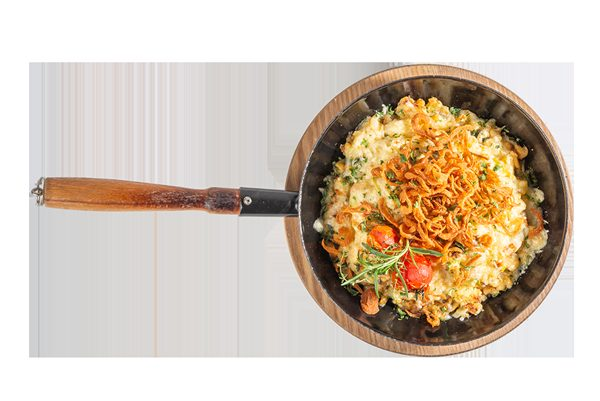
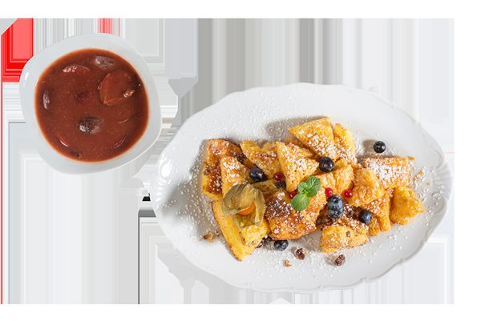
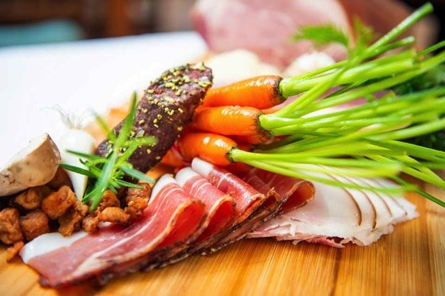

Seit 1934 im ältesten Viertel von Graz
1934 eröffnete Robert Herzl die Weinstube in einem Haus aus dem 17. Jahrhundert. Was seither geschah, ist eine höchst ereignisreiche Geschichte, deren Geist bis in die Gegenwart spürbar ist. Die traditionsreiche Gaststube wurde über die Jahre behutsam erneuert — ohne ihren urigen Charakter zu verlieren.
Heute führt Edith Seitinger das Haus mit dem Herzl-Team. 2016 feierte sie 12 Jahre als Herzl-Wirtin.

Regionale Qualitätsprodukte — offengelegt
Für die frische Speisenzubereitung und den Einsatz regionaler Rohstoffe wurden wir mit dem AMA-Gastrosiegel ausgezeichnet. Damit setzen wir ein deutliches Zeichen unserer Philosophie, die wir schon seit Jahren verfolgen.
- Rind, Kalb und SchweinFleisch aus Österreich
- Milch und Milchprodukteaus Österreich, mit AMA-Gütesiegel
- KäseChristoph Leitner, Tulwitz
- Eier aus BodenhaltungSulmtaler Frischei, Familie Teissl, Heimschuh
- Erdäpfel, Kraut, Zwiebel, Karotten, Grazer KrauthäuptlFriedrich Schlögl, Vasoldsberg
- EdelbrändeGünther Peer, Leitring
- Backhenderlmaisgefütterte Bauernhühner von Kicker
- Schweinefleisch und -erzeugnisseFleischermeister Ehmann, Ligist
- Wurst und RäucherwarenFleischerei Lamprecht
- Wildzartes Dammwild vom Wildererhof bei St. Stefan im Rosental
- Bio-WeideganserlFamilie Meixner bei Pöllau
- WeißweineSteiermark und Niederösterreich, Weingut Krainz (Süd-Südsteiermark)
- Rotweineaus dem Burgenland
- Fruchtsäftevon den Winzern oder aus Schlögels Obstgärten
Herzl-Feste und Hausgeschichten
- Eröffnung der Weinstube
Robert Herzl eröffnet die Herzl Weinstube in einem Haus aus dem 17. Jahrhundert. - Herzl Herbstfest
Wirtin Edith Seitinger feiert Geburtstag — und die Herzl Weinstube feiert mit. - Livemusik in altsteirischem Ambiente
Steirisch, jazzig oder volxtümlich: mittwochs startet die Hausmusi’. - Vernissage Allegra Wagner
Eröffnung der 1. Grazer Wirtshausgalerie mit der Künstlerin Allegra Wagner. - Frühlingsfest
Blumen- und Kräuterschau, Wein- und Schnaps-Verkostung, kleine Ottolina Kaffee-Schule, zünftige Musik und Ausklang beim Sonntags-Frühschoppen.
- Brötchen-Verkostung
Edith Seitinger stellt die „Herzl-Brötchen“ der Presse vor — das Resultat war durchwegs begeisternd. - Herbstfest & Hauptplatzln
Start in den kulinarischen Herbst mit frischer Speisekarte und steirischen Jahrgangsweinen; beim Hauptplatzln verwöhnt die Herzl mit Herzl-Brötchen, Murauer Bier, Sturm und Schnäpschen. - Der Steirerburger
Verkostung der neuen steirischen Herzl-Kreation. - Neue Speisekarte
Edith Seitinger und Küchenchef Maximilian Beyer-Desimon laden zur Verkostung. - 80 Jahre Herzl Weinstube
Das große Jubiläumsfest. - Backhenderlschmaus
Traditionelles Neujahrstreffen mit den besten Backhenderln von Graz. - 12 Jahre Herzl-Wirtin
Edith Seitinger feiert im Kreise der Familie und geladener Gäste; die Schnappschüsse lieferte Rudolf Gruber.
Aus dem Wirtshaus
Sämtliche Fotos stammen von der bestehenden Website der Herzl Weinstube.




Freunde und Empfehlungen
Gute und verlässliche Partner sind die Würze der täglichen Gastlichkeit. Hier finden Sie eine Reihe unserer Freunde, Partner, Lieferanten und Empfehlungen — die Liste wird laufend erweitert.
- Hotel Gollner — Gastfreundschaft seit Generationen im Herzen von Graz, stilvoll und familiengeführtHotel
- SEGYTOURS — Segway-Touren in Graz, das besondere Stadt-Erlebnis mit Fun-FaktorFreizeit
Grazer Sehenswürdigkeiten
- Glockenspiel GrazGlockenspielplatz
- Stadtpfarrkirche GrazHerrengasse
- Grazer DomBürgergasse
- Rathaus GrazHauptplatz
Alle Ziele liegen in Gehweite der Prokopigasse — die Altstadtterrasse ist auch über die Herrengasse und die Altstadt-Passage erreichbar.
Verstärkung für Service und Küche
Wir brauchen immer wieder Verstärkung im Service und in der Küche. Wenn Sie gerne mit Menschen arbeiten und steirische Wirtshauskultur mögen, freuen wir uns über Ihre Nachricht — auch initiativ, ohne konkrete Ausschreibung.